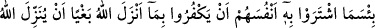
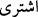

“Kul, Allah lâ’net etsin şu dünyâya, dediğinde dünyâ der ki: Evet hangimiz Rabbine
karşı daha isyânkârsa Allah ona lâ’net etsin.” Kişiye yakışan lâ’neti terk ederek, sa’y
u gayretini Allah’ın zikrine teksîf etmektir. Çünkü lâ’net edilen, buna lâyıksa bile
lâ’nette sevâb yoktur ama, zikirde çoktur. Yine Peygamberimiz (s.a.) şöyle buyurmuştur:
“Cehennem ehli bana gösterildi, onun ekserisinin kadınlardan olduğunu gördüm.
Çünkü onlar çok lâ’net eder ve kocalarının hakkını inkâr ederler. Ömür boyu
onlardan birisine iyi davransan, ama bir gün senden hoşuna gitmeyen bir şey olsa;
“Zâten senden hiç hayır görmedim ki, der.”[331]
Hz. Ali (k.v.) de şöyle buyurmuştur: “Bilmediği halde insanlara fetvâ veren kimseye
yer ve gök lâ’net eder.” Hz. Ali’nin kızı, babasına ağıza gelen kusmuk hakkında sordu.
Hz. Ali de “abdestin iâdesi gerekir” dedi. Rasûlullah bunu duyunca “Hayır ya Ali,
ancak ağız dolusu olursa abdesti bozar” dedi. Bunu duyan Ali de (k.v.). “Bu fetvânın
Rasûlullah (s.a.)’ın fetvâsıyla çakıştığını gördüm ve bir daha asla fetvâ vermemeye
yemin ettim, demiştir. “Ravzatü’l-Ahbâr’dan.”
90. Allah’ın kullarından dilediğine peygamberlik ihsan etmesini kıskandıkları için
Allah’ın indirdiğini (Kur’ân’ı) inkâr ederek kendilerini harcamaları ne kötü bir
şeydir! Böylece onlar, gazab üstüne gazaba uğradılar. Ayrıca kâfirler için alçaltıcı
bir azâb vardır.
“Satın alma” diye ifâde edilen “işterâ” ( __WORD__ ) fiili hem satın almak, hem de satmak
mânâsına gelir. Burada ikinci mânâ kastedilmiştir. Nefislerinden maksad îmândır.
Nefsin îmân yerine konması, nefsin ancak ve ancak îmân diye tâbir edilen ilim ve amel
için yaratıldığını bildirmek içindir. Onlar îmândan çıkıp küfre girmekle sanki
bedenlerini de küfürle değiştiler. “Ne kötüdür” bölümüyle zemmedilen kısım
“Beraberlerindeki Tevrât’ı doğrulayıcı olan Kur’ân’ı bile bile inkâr ettiler.”
kısmıdır. Küfre girmelerinin sebebi, kendilerinde olmayan bir şeye “hased” ederek
inkâr etmeleridir. Çünkü hased eden kimse, hased ettiği insandaki mal, makam veya iyi
ahlâk gibi şeylerin kendinde de olmasını ister. “Bâğî” ise hasedinden dolayı zulüm
yapan kimsedir. Bu takdirde mânâ: “Îmânlarını sattıkları şey ne kötüdür.” şeklinde
olmaktadır. Küfürlerin “bağy” olarak isimlendirilmesinin sebebi, hased ettikleri şeyin
“Allah katından” olması hasebiyledir. Ya da “bağy” dan maksad haseddir. Fazlından
Cenâb-ı Hakk’ın kuluna verdiği şey, “vahy” dir. Bunu da kullarından dilediğine verir.
Yâni, “nübüvvet hırkası”nı ancak onu taşımaya ehil olan insana verir. Bu âyette